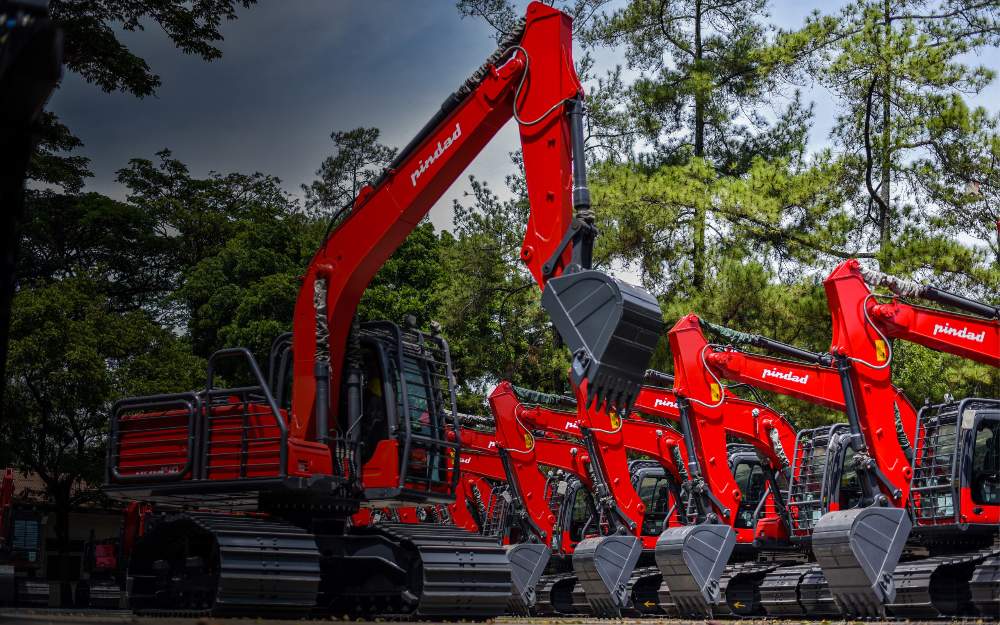
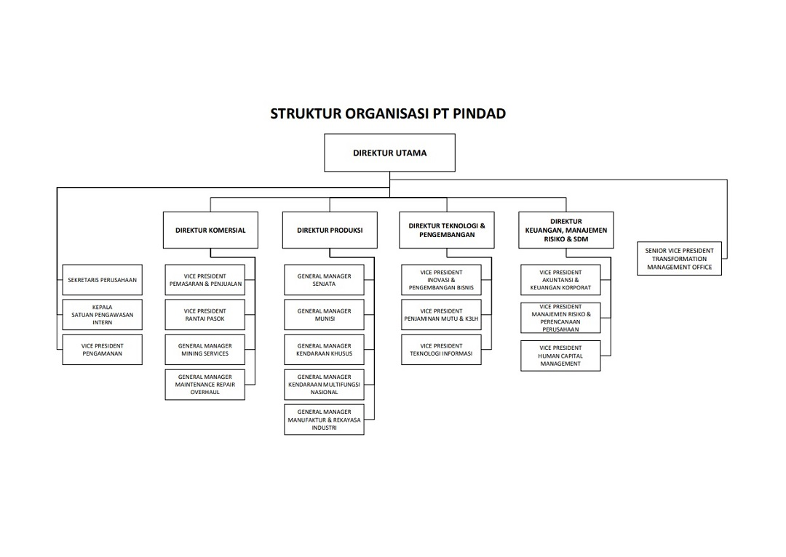

Sejarah & Tentang Pindad
Pindad berakar dari bengkel peralatan militer Belanda bernama Constructie Winkel (CW) yang berdiri di Surabaya pada 1808. Pada 1923 bengkel ini dipindahkan ke Bandung dengan nama Artillerie Constructie Winkel (ACW). Setelah kemerdekaan, fasilitas tersebut dikelola Indonesia dan berkembang menjadi industri alat peralatan militer di bawah TNI Angkatan Darat. Pada 29 April 1983 statusnya berubah menjadi BUMN dengan nama PT Pindad (Persero).
Saham Seri A Dwiwarna dimiliki Negara Republik Indonesia, sedangkan saham Seri B dimiliki PT Len Industri (Persero) sebagai induk holding DEFEND ID.
Situs Resmi1808 - 1923
Berdiri sebagai Constructie Winkel di Surabaya, lalu pindah ke Bandung sebagai Artillerie Constructie Winkel.
Pasca Kemerdekaan
Dikelola Indonesia dan berkembang menjadi pabrik senjata, munisi, serta peralatan Angkatan Darat, kemudian dikenal sebagai Pindad.
29 April 1983
Resmi menjadi BUMN dengan nama PT Pindad (Persero), memperluas bisnis ke produk komersial dan industrial.
Holding DEFEND ID
Kini tergabung dalam Holding BUMN Industri Pertahanan DEFEND ID bersama PT Len Industri, PT Dirgantara Indonesia, PT PAL Indonesia, dan PT Dahana.
Visi & Misi
Visi
Pindad bercita-cita menjadi industri pertahanan dan keamanan nasional yang maju, kuat, dan mandiri, memiliki daya saing tinggi, serta diperhitungkan di pasar global.
Misi
- Menyediakan alat peralatan pertahanan dan keamanan bagi para pengguna untuk melindungi kedaulatan negara.
- Memperkuat posisi di rantai industri global lewat aliansi strategis dan kemitraan yang saling menguntungkan.
- Mendorong kemandirian teknologi serta meningkatkan daya saing di tingkat nasional dan internasional.
- Membangun kolaborasi inovasi untuk mengembangkan teknologi pertahanan dan keamanan yang terintegrasi.
- Menjadi penggerak utama dalam membangun ekosistem industri pertahanan dan keamanan dalam negeri yang berkelanjutan.
Struktur Perusahaan
Dipimpin oleh Direktur Utama yang membawahi empat direktur, yaitu Komersial, Produksi, Teknologi & Pengembangan, serta Keuangan, Manajemen Risiko & SDM.

Struktur Organisasi PT Pindad (klik gambar untuk memperbesar)Direktur Komersial
Mengurus pemasaran dan penjualan, rantai pasok, layanan pertambangan (Mining Services), serta Maintenance, Repair & Overhaul (MRO).
Direktur Produksi
Memimpin lini produksi: General Manager Senjata, Munisi, Kendaraan Khusus, Kendaraan Multifungsi Nasional, serta Manufaktur & Rekayasa Industri.
Direktur Teknologi & Pengembangan
Membawahi inovasi dan pengembangan bisnis, penjaminan mutu dan K3LH, serta teknologi informasi.
Direktur Keuangan, Manajemen Risiko & SDM
Membawahi akuntansi dan keuangan korporat, manajemen risiko dan perencanaan perusahaan, serta Human Capital Management.
Di bawah Direktur Utama juga terdapat Sekretaris Perusahaan, Kepala Satuan Pengawasan Intern, VP Pengamanan, dan Senior VP Transformation Management Office. Struktur dapat berubah, cek pembaruan di pindad.com.
Tahun Akar Berdiri Constructie Winkel
Menjadi BUMN PT Pindad (Persero)
Hektar luas area pabrik Bandung (±)
Lokasi Kantor Bandung, Turen, Jakarta
Produk yang Dihasilkan
Produk pertahanan dan keamanan serta produk industrial. Ganti gambar di folder assets/img/portfolio dengan foto produk resmi.
- Semua
- Senjata
- Munisi
- Kendaraan
- Industrial


Sosial Media PT Pindad
Ikuti kanal resmi Pindad untuk informasi produk, kegiatan, dan kabar terbaru perusahaan.
@pt_pindadLokasi & Alamat
Kantor pusat di Bandung, perwakilan di Jakarta, dan Divisi Munisi di Turen, Malang.
Kantor Pusat
Jl. Gatot Subroto No. 517, Bandung 40285, Jawa Barat
Telepon & Faks
+62 22 7312073 | Faks +62 22 7301222
Email & Website
info@pindad.com | pindad.com
Kantor Lain
Perwakilan Jakarta: Jl. Batu Ceper No. 28, Jakarta 10120.
Divisi Munisi: Jl. Jend. Panglima Sudirman No. 1, Turen, Malang 65175.